Unit 11
The p -Block elements
The p -Block elements

Objectives
After studying this unit, you will be able to
“The variation in properties of the p-block elements due to the influence of d and f electrons in the inner core of the heavier elements makes their chemistry interesting”
In p-block elements the last electron enters the outermost p orbital. As we know that the number of p orbitals is three and, therefore, the maximum number of electrons that can be accommodated in a set of p orbitals is six. Consequently there are six groups of p–block elements in the periodic table numbering from 13 to 18. Boron, carbon, nitrogen, oxygen, fluorine and helium head the groups. Their valence shell electronic configuration is ns2np1-6(except for He). The inner core of the electronic configuration may, however, differ. The difference in inner core of elements greatly influences their physical properties (such as atomic and ionic radii, ionisation enthalpy, etc.) as well as chemical properties. Consequently, a lot of variation in properties of elements in a group of p-block is observed. The maximum oxidation state shown by a p-block element is equal to the total number of valence electrons (i.e., the sum of the s- and p-electrons). Clearly, the number of possible oxidation states increases towards the right of the periodic table. In addition to this so called group oxidation state, p-block elements may show other oxidation states which normally, but not necessarily, differ from the total number of valence electrons by unit of two. The important oxidation states exhibited by p-block elements are shown in Table 11.1. In boron, carbon and nitrogen families the group oxidation state is the most stable state for the lighter elements in the group. However, the oxidation state two unit less than the group oxidation state becomes progressively more stable for the heavier elements in each group. The occurrence of oxidation states two unit less than the group oxidation states are sometime attributed to the ‘inert pair effect’. The relative stabilities of these two oxidation states – group oxidation state and two unit less than the group oxidation state – may vary from group to group and will be discussed at appropriate places.
Table 11.1 General Electronic Configuration and Oxidation States of p-Block Elements
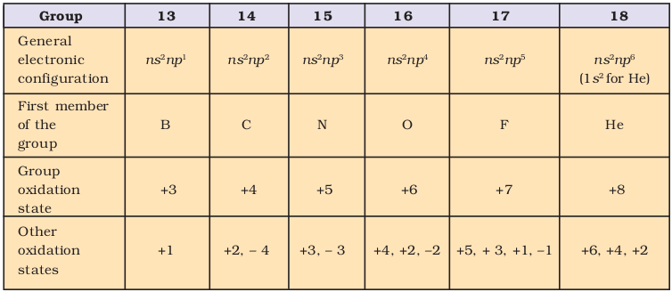
It is interesting to note that the non-metals and metalloids exist only in the p-block of the periodic table. The non-metallic character of elements decreases down the group. In fact the heaviest element in each p-block group is the most metallic in nature. This change from non-metallic to metallic character brings diversity in the chemistry of these elements depending on the group to which they belong.
In general, non-metals have higher ionisation enthalpies and higher electronegativities than the metals. Hence, in contrast to metals which readily form cations, non-metals readily form anions. The compounds formed by highly reactive non-metals with highly reactive metals are generally ionic because of large differences in their electronegativities. On the other hand, compounds formed between non-metals themselves are largely covalent in character because of small differences in their electronegativities. The change of non-metallic to metallic character can be best illustrated by the nature of oxides they form. The non-metal oxides are acidic or neutral whereas metal oxides are basic in nature.
The first member of p-block differs from the remaining members of their corresponding group in two major respects. First is the size and all other properties which depend on size. Thus, the lightest p-block elements show the same kind of differences as the lightest s-block elements, lithium and beryllium. The second important difference, which applies only to the p-block elements, arises from the effect of d-orbitals in the valence shell of heavier elements (starting from the third period onwards) and their lack in second period elements. The second period elements of p-groups starting from boron are restricted to a maximum covalence of four (using 2s and three 2p orbitals). In contrast, the third period elements of p-groups with the electronic configuration 3s23pn have the vacant 3d orbitals lying between the 3p and the 4s levels of energy. Using these d-orbitals the third period elements can expand their covalence above four. For example, while boron forms only [BF4]–, aluminium gives [AlF6]3– ion. The presence of these d-orbitals influences the chemistry of the heavier elements in a number of other ways. The combined effect of size and availability of d orbitals considerably influences the ability of these elements to form π bonds. The first member of a group differs from the heavier members in its ability to form pπ - pπ multiple bonds to itself ( e.g., C=C, C≡C, N≡N) and to other second row elements (e.g., C=O, C=N, C≡N, N=O). This type of π - bonding is not particularly strong for the heavier p-block elements. The heavier elements do form π bonds but this involves d orbitals (dπ – pπ or dπ –dπ ). As the d orbitals are of higher energy than the p orbitals, they contribute less to the overall stability of molecules than does pπ - pπ bonding of the second row elements. However, the coordination number in species of heavier elements may be higher than for the first element in the same oxidation state. For example, in +5 oxidation state both N and P form oxoanions : NO3– (three-coordination with π – bond involving one nitrogen p-orbital) and 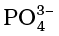 (four-coordination involving s, p and d orbitals contributing to the π – bond). In this unit we will study the chemistry of group 13 and 14 elements of the periodic table.
11.1 GROUP 13 ELEMENTS: THE BORON FAMILY
This group elements show a wide variation in properties. Boron is a typical non-metal, aluminium is a metal but shows many chemical similarities to boron, and gallium, indium and thallium are almost exclusively metallic in character.
Boron is a fairly rare element, mainly occurs as orthoboric acid, (H3BO3), borax, Na2B4O7·10H2O, and kernite, Na2B4O7·4H2O. In India borax occurs in Puga Valley (Ladakh) and Sambhar Lake (Rajasthan). The abundance of boron in earth crust is less than 0.0001% by mass. There are two isotopic forms of boron 10B (19%) and 11B (81%). Aluminium is the most abundant metal and the third most abundant element in the earth’s crust (8.3% by mass) after oxygen (45.5%) and Si (27.7%). Bauxite, Al2O3. 2H2O and cryolite, Na3AlF6 are the important minerals of aluminium. In India it is found as mica in Madhya Pradesh, Karnataka, Orissa and Jammu. Gallium, indium and thallium are less abundant elements in nature.
The atomic, physical and chemical properties of these elements are discussed below.
11.1.1 Electronic Configuration
The outer electronic configuration of these elements is ns2np1. A close look at the electronic configuration suggests that while boron and aluminium have noble gas core, gallium and indium have noble gas plus 10 d-electrons, and thallium has noble gas plus 14 f- electrons plus 10 d-electron cores. Thus, the electronic structures of these elements are more complex than for the first two groups of elements discussed in unit 10. This difference in electronic structures affects the other properties and consequently the chemistry of all the elements of this group.
11.1.2 Atomic Radii
On moving down the group, for each successive member one extra shell of electrons is added and, therefore, atomic radius is expected to increase. However, a deviation can be seen. Atomic radius of Ga is less than that of Al. This can be understood from the variation in the inner core of the electronic configuration. The presence of additional 10 d-electrons offer only poor screening effect (Unit 2) for the outer electrons from the increased nuclear charge in gallium. Consequently, the atomic radius of gallium (135 pm) is less than that of aluminium (143 pm).
11.1.3 Ionization Enthalpy
The ionisation enthalpy values as expected from the general trends do not decrease smoothly down the group. The decrease from B to Al is associated with increase in size. The observed discontinuity in the ionisation enthalpy values between Al and Ga, and between In and Tl are due to inability of d- and f-electrons ,which have low screening effect, to compensate the increase in nuclear charge.
The order of ionisation enthalpies, as expected, is ∆iH1<∆iH2<∆iH3. The sum of the first three ionisation enthalpies for each of the elements is very high. Effect of this will be apparent when you study their chemical properties.
11.1.4 Electronegativity
Down the group, electronegativity first decreases from B to Al and then increases marginally (Table 11.2). This is because of the discrepancies in atomic size of the elements.
11.1.5 Physical Properties
Boron is non-metallic in nature. It is extremely hard and black coloured solid. It exists in many allotropic forms. Due to very strong crystalline lattice, boron has unusually high melting point. Rest of the members are soft metals with low melting point and high electrical conductivity. It is worthwhile to note that gallium with unusually low melting point (303K), could exist in liquid state during summer. Its high boiling point (2676K) makes it a useful material for measuring high temperatures. Density of the elements increases down the group from boron to thallium.
11.1.6 Chemical Properties
Oxidation state and trends in chemical reactivity
Due to small size of boron, the sum of its first three ionization enthalpies is very high. This prevents it to form +3 ions and forces it to form only covalent compounds. But as we move from B to Al, the sum of the first three ionisation enthalpies of Al considerably decreases, and is therefore able to form Al3+ ions. In fact, aluminium is a highly electropositive metal. However, down the group, due to poor shielding effect of intervening d and f orbitals, the increased effective nuclear charge holds ns electrons tightly (responsible for inert pair effect) and thereby, restricting their participation in bonding. As a result of this, only p-orbital electron may be involved in bonding. In fact in Ga, In and Tl, both +1 and +3 oxidation states are observed. The relative stability of +1 oxidation state progressively increases for heavier elements: Al<Ga<In<Tl. In thallium +1 oxidation state is predominant whereas the +3 oxidation state is highly oxidising in character. The compounds in +1 oxidation state, as expected from energy considerations, are more ionic than those in +3 oxidation state.
Table 11.2 Atomic and Physical Properties of Group 13 Elements
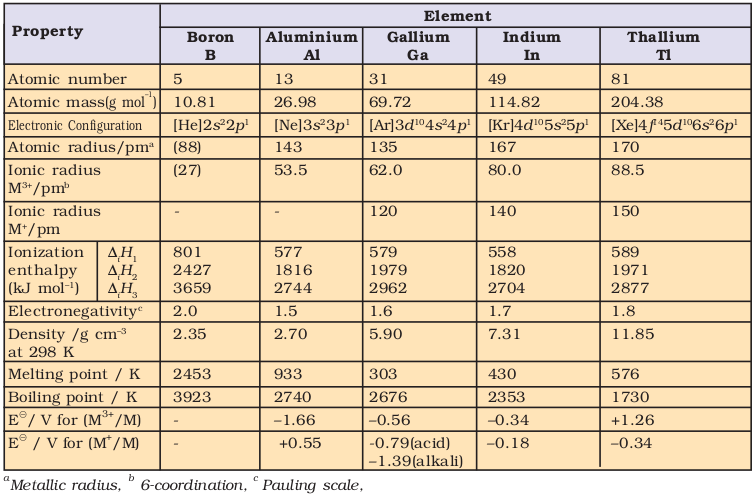
In trivalent state, the number of electrons around the central atom in a molecule of the compounds of these elements (e.g., boron in BF3) will be only six. Such electron deficient molecules have tendency to accept a pair of electrons to achieve stable electronic configuration and thus, behave as Lewis acids. The tendency to behave as Lewis acid decreases with the increase in the size down the group. BCl3 easily accepts a lone pair of electrons from ammonia to form BCl3⋅NH3.
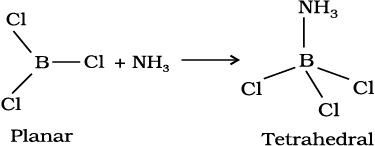
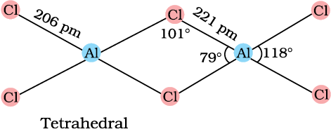
In trivalent state most of the compounds being covalent are hydrolysed in water. For example, the trichlorides on hyrolysis in water form tetrahedral  species; the hybridisation state of element M is sp3. Aluminium chloride in acidified aqueous solution forms octahedral
species; the hybridisation state of element M is sp3. Aluminium chloride in acidified aqueous solution forms octahedral  ion. In this complex ion, the 3d orbitals of Al are involved and the hybridisation state of Al is sp3d2.
ion. In this complex ion, the 3d orbitals of Al are involved and the hybridisation state of Al is sp3d2.
Problem 11.1
Standard electrode potential values, 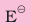 for Al3+/Al is –1.66 V and that of Tl3+/Tl is +1.26 V. Predict about the formation of M3+ ion in solution and compare the electropositive character of the two metals.
Solution
Standard electrode potential values for two half cell reactions suggest that aluminium has high tendency to make Al3+(aq) ions, whereas Tl3+ is not only unstable in solution but is a powerful oxidising agent also. Thus Tl+ is more stable in solution than Tl3+. Aluminium being able to form +3 ions easily, is more electropositive than thallium.
(i) Reactivity towards air
Boron is unreactive in crystalline form. Aluminium forms a very thin oxide layer on the surface which protects the metal from further attack. Amorphous boron and aluminium metal on heating in air form B2O3 and Al2O3 respectively. With dinitrogen at high temperature they form nitrides.
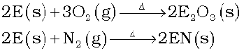
(E = element)
The nature of these oxides varies down the group. Boron trioxide is acidic and reacts with basic (metallic) oxides forming metal borates. Aluminium and gallium oxides are amphoteric and those of indium and thallium are basic in their properties.
(ii) Reactivity towards acids and alkalies
Boron does not react with acids and alkalies even at moderate temperature; but aluminium dissolves in mineral acids and aqueous alkalies and thus shows amphoteric character.
Aluminium dissolves in dilute HCl and liberates dihydrogen.
2Al(s) + 6HCl (aq) → 2Al3+ (aq) + 6Cl– (aq) + 3H2 (g)
However, concentrated nitric acid renders aluminium passive by forming a protective oxide layer on the surface.
Aluminium also reacts with aqueous alkali and liberates dihydrogen.
2Al (s) + 2NaOH(aq) + 6H2O(l)
↓
2 Na+ [Al(OH)4] –(aq) + 3H2(g)
Sodium
tetrahydroxoaluminate(III)
(iii) Reactivity towards halogens
These elements react with halogens to form trihalides (except TlI3).
2E(s) + 3 X2 (g) → 2EX3 (s) (X = F, Cl, Br, I)
Problem 11.2
White fumes appear around the bottle of anhydrous aluminium chloride. Give reason.
Solution
Anhydrous aluminium chloride is partially hydrolysed with atmospheric moisture to liberate HCl gas. Moist HCl appears white in colour.
11.2 IMPORTANT TRENDS AND ANOMALOUS PROPERTIES OF BORON
Certain important trends can be observed in the chemical behaviour of group 13 elements. The tri-chlorides, bromides and iodides of all these elements being covalent in nature are hydrolysed in water. Species like tetrahedral [M(OH)4]– and octahedral [M(H2O)6]3+, except in boron, exist in aqueous medium.
The monomeric trihalides, being electron deficient, are strong Lewis acids. Boron trifluoride easily reacts with Lewis bases such as NH3 to complete octet around boron.

It is due to the absence of d orbitals that the maximum covalence of B is 4. Since the d orbitals are available with Al and other elements, the maximum covalence can be expected beyond 4. Most of the other metal halides (e.g., AlCl3) are dimerised through halogen bridging (e.g., Al2Cl6). The metal species completes its octet by accepting electrons from halogen in these halogen bridged molecules.
Problem 11.3
Boron is unable to form BF63– ion. Explain.
Solution
Due to non-availability of d orbitals, boron is unable to expand its octet. Therefore, the maximum covalence of boron cannot exceed 4.
11.3 SOME IMPORTANT COMPOUNDS OF BORON
Some useful compounds of boron are borax, orthoboric acid and diborane. We will briefly study their chemistry.
11.3.1 Borax
It is the most important compound of boron. It is a white crystalline solid of formula Na2B4O7⋅10H2O. In fact it contains the tetranuclear units  and correct formula; therefore, is Na2[B4O5 (OH)4].8H2O. Borax dissolves in water to give an alkaline solution.
and correct formula; therefore, is Na2[B4O5 (OH)4].8H2O. Borax dissolves in water to give an alkaline solution.
Na2B4O7 + 7H2O → 2NaOH + 4H3BO3
Orthoboric acid
On heating, borax first loses water molecules and swells up. On further heating it turns into a transparent liquid, which solidifies into glass like material known as borax
bead.
Na2B4O7.10H2O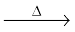Na2B4O7 2NaBO2 + B2O3
2NaBO2 + B2O3
Sodium Boric
metaborate anhydride
The metaborates of many transition metals have characteristic colours and, therefore, borax bead test can be used to identify them in the laboratory. For example, when borax is heated in a Bunsen burner flame with CoO on a loop of platinum wire, a blue coloured Co(BO2)2 bead is formed.
11.3.2 Orthoboric acid
Orthoboric acid, H3BO3 is a white crystalline solid, with soapy touch. It is sparingly soluble in water but highly soluble in hot water. It can be prepared by acidifying an aqueous solution of borax.
Na2B4O7 + 2HCl + 5H2O → 2NaCl + 4B(OH)3
It is also formed by the hydrolysis (reaction with water or dilute acid) of most boron compounds (halides, hydrides, etc.). It has a layer structure in which planar BO3 units are joined by hydrogen bonds as shown inFig. 11.1.
Boric acid is a weak monobasic acid. It is not a protonic acid but acts as a Lewis acid by accepting electrons from a hydroxyl
ion:
B(OH)3 + 2HOH → [B(OH)4]– + H3O+
On heating, orthoboric acid above 370K forms metaboric acid, HBO2 which on further heating yields boric oxide, B2O3.
H3BO3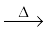HBO2 B2O3
B2O3
Problem 11.4
Why is boric acid considered as a weak acid?
Solution
Because it is not able to release H+ ions on its own. It receives OH– ions from water molecule to complete its octet and in turn releases H+ ions.
11.3.3 Diborane, B2H6
The simplest boron hydride known, is diborane. It is prepared by treating boron trifluoride with LiAlH4 in diethyl ether.
4BF3 + 3 LiAlH4 → 2B2H6 + 3LiF + 3AlF3
A convenient laboratory method for the preparation of diborane involves the oxidation of sodium borohydride with iodine.
2NaBH4 + I2 → B2H6 + 2NaI + H2
Diborane is produced on an industrial scale by the reaction of BF3 with sodium hydride.

Diborane is a colourless, highly toxic gas with a b.p. of 180 K. Diborane catches fire spontaneously upon exposure to air. It burns in oxygen releasing an enormous amount of energy.

Most of the higher boranes are also spontaneously flammable in air. Boranes are readily hydrolysed by water to give boric acid.
B2H6(g) + 6H2O(l) → 2B(OH)3(aq) + 6H2(g)
Diborane undergoes cleavage reactions with Lewis bases(L) to give borane adducts, BH3⋅L
B2H6 + 2 NMe3 → 2BH3⋅NMe3
B2H6 + 2 CO → 2BH3⋅CO
Reaction of ammonia with diborane gives initially B2H6.2NH3 which is formulated as [BH2(NH3)2]+ [BH4]– ; further heating gives borazine, B3N3H6 known as “inorganic benzene” in view of its ring structure with alternate BH and NH groups.
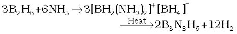
The structure of diborane is shown in Fig.11.2(a). The four terminal hydrogen atoms and the two boron atoms lie in one plane. Above and below this plane, there are two bridging hydrogen atoms. The four terminal B-H bonds are regular two centre-two electron bonds while the two bridge (B-H-B) bonds are different and can be described in terms of three centre–two electron bonds shown in Fig.11.2 (b).
Fig.11.2(a) The structure of diborane, B2H6
Boron also forms a series of hydridoborates; the most important one is the tetrahedral [BH4]– ion. Tetrahydridoborates of several metals are known. Lithium and sodium tetra-hydridoborates, also known as borohydrides, are prepared by the reaction of metal hydrides with B2H6 in diethyl ether.
2MH + B2H6 → 2 M+ [BH4]– (M = Li or Na)
Fig.11.2(b) Bonding in diborane. Each B atom uses sp3 hybrids for bonding. Out of the four sp3 hybrids on each B atom, one is without an electron shown in broken lines. The terminal B-H bonds are normal 2-centre-2-electron bonds but the two bridge bonds are 3-centre-2-electron bonds. The 3-centre-2-electron bridge bonds are also referred to as banana bonds.
Both LiBH4 and NaBH4 are used as reducing agents in organic synthesis. They are useful starting materials for preparing other metal borohydrides.
11.4 USES OF BORON AND ALUMINIUM AND THEIR COMPOUNDS
Boron being extremely hard refractory solid of high melting point, low density and very low electrical conductivity, finds many applications. Boron fibres are used in making bullet-proof vest and light composite material for aircraft. The boron-10 (10B) isotope has high ability to absorb neutrons and, therefore, metal borides are used in nuclear industry as protective shields and control rods. The main industrial application of borax and boric acid is in the manufacture of heat resistant glasses (e.g., Pyrex), glass-wool and fibreglass. Borax is also used as a flux for soldering metals, for heat, scratch and stain resistant glazed coating to earthenwares and as constituent of medicinal soaps. An aqueous solution of orthoboric acid is generally used as a mild antiseptic.
Aluminium is a bright silvery-white metal, with high tensile strength. It has a high electrical and thermal conductivity. On a weight-to-weight basis, the electrical conductivity of aluminium is twice that of copper. Aluminium is used extensively in industry and every day life. It forms alloys with Cu, Mn, Mg, Si and Zn. Aluminium and its alloys can be given shapes of pipe, tubes, rods, wires, plates or foils and, therefore, find uses in packing, utensil making, construction, aeroplane and transportation industry. The use of aluminium and its compounds for domestic purposes is now reduced considerably because of their toxic nature.
11.5 GROUP 14 ELEMENTS: THE CARBON FAMILY
Carbon (C), silicon (Si), germanium (Ge), tin (Sn) and lead (Pb) are the members of group 14. Carbon is the seventeenth most abundant element by mass in the earth’s crust. It is widely distributed in nature in free as well as in the combined state. In elemental state it is available as coal, graphite and diamond; however, in combined state it is present as metal carbonates, hydrocarbons and carbon dioxide gas (0.03%) in air. One can emphatically say that carbon is the most versatile element in the world. Its combination with other elements such as dihydrogen, dioxygen, chlorine and sulphur provides an astonishing array of materials ranging from living tissues to drugs and plastics. Organic chemistry is devoted to carbon containing compounds. It is an essential constituent of all living organisms. Naturally occurring carbon contains two stable isotopes:12C and 13C. In addition to these, third isotope, 14C is also present. It is a radioactive isotope with half-life 5770 years and used for radiocarbon dating. Silicon is the second (27.7 % by mass) most abundant element on the earth’s crust and is present in nature in the form of silica and silicates. Silicon is a very important component of ceramics, glass and cement. Germanium exists only in traces. Tin occurs mainly as cassiterite, SnO2 and lead as galena, PbS.
Ultrapure form of germanium and silicon are used to make transistors and semiconductor devices.
The important atomic and physical properties of the group 14 elements along with their electronic configuration are given in Table 11.3 Some of the atomic, physical and chemical properties are discussed below:
Table 11.3 Atomic and Physical Properties of Group 14 Elements
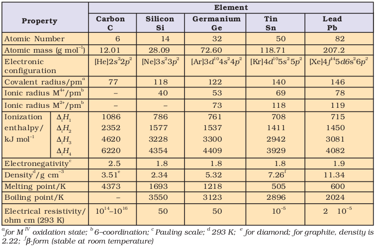
11.5.1 Electronic Configuration The valence shell electronic configuration of these elements is ns2np2. The inner core of the electronic configuration of elements in this group also differs. 11.5.2 Covalent Radius There is a considerable increase in covalent radius from C to Si, thereafter from Si to Pb a small increase in radius is observed. This is due to the presence of completely filled d and f orbitals in heavier members. 11.5.3 Ionization Enthalpy The first ionization enthalpy of group 14 members is higher than the corresponding members of group 13. The influence of inner core electrons is visible here also. In general the ionisation enthalpy decreases down the group. Small decrease in ∆iH from Si to Ge to Sn and slight increase in ∆iH from Sn to Pb is the consequence of poor shielding effect of intervening d and f orbitals and increase in size of the atom.
11.5.4 Electronegativity
Due to small size, the elements of this group are slightly more electronegative than group 13 elements. The electronegativity values for elements from Si to Pb are almost the same.
11.5.5 Physical Properties
All group 14 members are solids. Carbon and silicon are non-metals, germanium is a metalloid, whereas tin and lead are soft metals with low melting points. Melting points and boiling points of group 14 elements are much higher than those of corresponding elements of group 13.
11.5.6 Chemical Properties
Oxidation states and trends in chemical reactivity
The group 14 elements have four electrons in outermost shell. The common oxidation states exhibited by these elements are +4 and +2. Carbon also exhibits negative oxidation states. Since the sum of the first four ionization enthalpies is very high, compounds in +4 oxidation state are generally covalent in nature. In heavier members the tendency to show +2 oxidation state increases in the sequence Ge<Sn<Pb. It is due to the inability of ns2 electrons of valence shell to participate in bonding. The relative stabilities of these two oxidation states vary down the group. Carbon and silicon mostly show +4 oxidation state. Germanium forms stable compounds in +4 state and only few compounds in +2 state. Tin forms compounds in both oxidation states (Sn in +2 state is a reducing agent). Lead compounds in +2 state are stable and in +4 state are strong oxidising agents. In tetravalent state the number of electrons around the central atom in a molecule (e.g., carbon in CCl4) is eight. Being electron precise molecules, they are normally not expected to act as electron acceptor or electron donor species. Although carbon cannot exceed its covalence more than 4, other elements of the group can do so. It is because of the presence of d orbital in them. Due to this, their halides undergo hydrolysis and have tendency to form complexes by accepting electron pairs from donor species. For example, the species like, SiF62–, [GeCl6]2–, [Sn(OH)6]2– exist where the hybridisation of the central atom is sp3d2.
(i) Reactivity towards oxygen
All members when heated in oxygen form oxides. There are mainly two types of oxides, i.e., monoxide and dioxide of formula MO and MO2 respectively. SiO only exists at high temperature. Oxides in higher oxidation states of elements are generally more acidic than those in lower oxidation states. The dioxides — CO2, SiO2 and GeO2 are acidic, whereas SnO2 and PbO2 are amphoteric in nature. Among monoxides, CO is neutral, GeO is distinctly acidic whereas SnO and PbO are amphoteric.
Problem 11.5
Select the member(s) of group 14 that (i) forms the most acidic dioxide, (ii) is commonly found in +2 oxidation state, (iii) used as semiconductor.
Solution
(i) carbon (ii) lead
(iii) silicon and germanium
(ii) Reactivity towards water
Carbon, silicon and germanium are not affected by water. Tin decomposes steam to form dioxide and dihydrogen gas.

Lead is unaffected by water, probably because of a protective oxide film formation.
(iii) Reactivity towards halogen
These elements can form halides of formula MX2 and MX4 (where X = F, Cl, Br, I). Except carbon, all other members react directly with halogen under suitable condition to make halides. Most of the MX4 are covalent in nature. The central metal atom in these halides undergoes sp3 hybridisation and the molecule is tetrahedral in shape. Exceptions are SnF4 and PbF4, which are ionic in nature. PbI4 does not exist because Pb—I bond initially formed during the reaction does not release enough energy to unpair 6s2 electrons and excite one of them to higher orbital to have four unpaired electrons around lead atom. Heavier members Ge to Pb are able to make halides of formula MX2. Stability of dihalides increases down the group. Considering the thermal and chemical stability, GeX4 is more stable than GeX2, whereas PbX2 is more than PbX4. Except CCl4, other tetrachlorides are easily hydrolysed by water because the central atom can accommodate the lone pair of electrons from oxygen atom of water molecule in dorbital.
Hydrolysis can be understood by taking the example of SiCl4.It undergoes hydrolysis by initially accepting lone pair of electrons from water molecule in d orbitals of Si, finally leading to the formation of Si(OH)4 as shown below :
Problem 11. 6
[SiF6]2– is known whereas [SiCl6]2– not. Give possible reasons.
Solution
The main reasons are :
(i) six large chloride ions cannot be accommodated around Si4+ due to limitation of its size.
(ii) interaction between lone pair of chloride ion and Si4+ is not very strong.
11.6 IMPORTANT TRENDS AND ANOMALOUS BEHAVIOUR OF CARBON
Like first member of other groups, carbon also differs from rest of the members of its group. It is due to its smaller size, higher electronegativity, higher ionisation enthalpy and unavailability of d orbitals.
In carbon, only s and p orbitals are available for bonding and, therefore, it can accommodate only four pairs of electrons around it. This would limit the maximum covalence to four whereas other members can expand their covalence due to the presence of d orbitals.
Carbon also has unique ability to form pπ– pπ multiple bonds with itself and with other atoms of small size and high electronegativity. Few examples of multiple bonding are: C=C, C ≡ C, C = O, C = S, and C ≡ N. Heavier elements do not form pπ– pπ bonds because their atomic orbitals are too large and diffuse to have effective overlapping.
Carbon atoms have the tendency to link with one another through covalent bonds to form chains and rings. This property is called catenation. This is because C—C bonds are very strong. Down the group the size increases and electronegativity decreases, and, thereby, tendency to show catenation decreases. This can be clearly seen from bond enthalpies values. The order of catenation is C > > Si > Ge ≈ Sn. Lead does not show catenation.
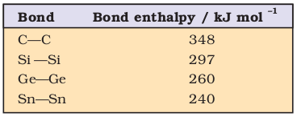
Due to property of catenation and pπ– pπ bond formation, carbon is able to show allotropic forms.
11.7 Allotropes of carbon
Carbon exhibits many allotropic forms; both crystalline as well as amorphous. Diamond and graphite are two well-known crystalline forms of carbon. In 1985, third form of carbon known as fullerenes was discovered by H.W.Kroto, E.Smalley and R.F.Curl. For this discovery they were awarded the Nobel Prize in 1996.
11.7.1 Diamond
It has a crystalline lattice. In diamond each carbon atom undergoes sp3 hybridisation and linked to four other carbon atoms by using hybridised orbitals in tetrahedral fashion. The C–C bond length is 154 pm. The structure extends in space and produces a rigid three-dimensional network of carbon atoms. In this structure (Fig. 11.3) directional covalent bonds are present throughout the lattice.
It is very difficult to break extended covalent bonding and, therefore, diamond is a hardest substance on the earth. It is used as an abrasive for sharpening hard tools, in making dyes and in the manufacture of tungsten filaments for electric light bulbs.
Problem 11.7
Diamond is covalent, yet it has high melting point. Why ?
Solution
Diamond has a three-dimensional network involving strong C—C bonds, which are very difficult to break and, in turn has high melting point.
11.7.2 Graphite
Graphite has layered structure (Fig.11.4). Layers are held by van der Waals forces and distance between two layers is 340 pm. Each layer is composed of planar hexagonal rings of carbon atoms. C—C bond length within the layer is 141.5 pm. Each carbon atom in hexagonal ring undergoes sp2 hybridisation and makes three sigma bonds with three neighbouring carbon atoms. Fourth electron forms a π bond. The electrons are delocalised over the whole sheet. Electrons are mobile and, therefore, graphite conducts electricity along the sheet. Graphite cleaves easily between the layers and, therefore, it is very soft and slippery. For this reason graphite is used as a dry lubricant in machines running at high temperature, where oil cannot be used as a lubricant.
11.7.3 Fullerenes
Fullerenes are made by the heating of graphite in an electric arc in the presence of inert gases such as helium or argon. The sooty material formed by condensation of vapourised Cn small molecules consists of mainly C60 with smaller quantity of C70 and traces of fullerenes consisting of even number of carbon atoms up to 350 or above. Fullerenes are the only pure form of carbon because they have smooth structure without having ‘dangling’ bonds. Fullerenes are cage like molecules. C60 molecule has a shape like soccer ball and called Buckminsterfullerene (Fig. 11.5).
It contains twenty six- membered rings and twelve five membered rings. A six membered ring is fused with six or five membered rings but a five membered ring can only fuse with six membered rings. All the carbon atoms are equal and they undergo sp2 hybridisation. Each carbon atom forms three sigma bonds with other three carbon atoms. The remaining electron at each carbon is delocalised in molecular orbitals, which in turn give aromatic character to molecule. This ball shaped molecule has 60 vertices and each one is occupied by one carbon atom and it also contains both single and double bonds with C–C distances of 143.5 pm and 138.3 pm respectively. Spherical fullerenes are also called bucky balls in short.
Fig.11.5 The structure of C60, Buckminster-fullerene : Note that molecule has the shape of a soccer ball (football).
It is very important to know that graphite is thermodynamically most stable allotrope of carbon and, therefore, ∆f H of graphite is taken as zero. ∆f H values of diamond and fullerene, C60 are 1.90 and 38.1 kJ mol–1, respectively.
Other forms of elemental carbon like carbon black, coke, and charcoal are all impure forms of graphite or fullerenes. Carbon black is obtained by burning hydrocarbons in a limited supply of air. Charcoal and coke are obtained by heating wood or coal respectively at high temperatures in the absence of air.
11.7.4 Uses of Carbon
Graphite fibres embedded in plastic material form high strength, lightweight composites. The composites are used in products such as tennis rackets, fishing rods, aircrafts and canoes. Being good conductor, graphite is used for electrodes in batteries and industrial electrolysis. Crucibles made from graphite are inert to dilute acids and alkalies. Being highly porous, activated charcoal is used in adsorbing poisonous gases; also used in water filters to remove organic contaminators and in airconditioning system to control odour. Carbon black is used as black pigment in black ink and as filler in automobile tyres. Coke is used as a fuel and largely as a reducing agent in metallurgy. Diamond is a precious stone and used in jewellery. It is measured in carats (1 carat = 200 mg).
11.8 SOME IMPORTANT COMPOUNDS OF CARBON AND SILICON
Oxides of Carbon
Two important oxides of carbon are carbon monoxide, CO and carbon dioxide, CO2.
11.8.1 Carbon Monoxide
Direct oxidation of C in limited supply of oxygen or air yields carbon monoxide.

On small scale pure CO is prepared by dehydration of formic acid with concentrated H2SO4 at 373 K
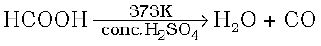
On commercial scale it is prepared by the passage of steam over hot coke. The mixture of CO and H2 thus produced is known as water gas or synthesis gas.
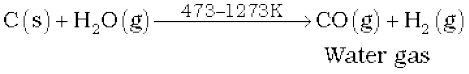
When air is used instead of steam, a mixture of CO and N2 is produced, which is called producer gas.
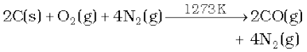
Producer gas
Water gas and producer gas are very important industrial fuels. Carbon monoxide in water gas or producer gas can undergo further combustion forming carbon dioxide with the liberation of heat.
Carbon monoxide is a colourless, odourless and almost water insoluble gas. It is a powerful reducing agent and reduces almost all metal oxides other than those of the alkali and alkaline earth metals, aluminium and a few transition metals. This property of CO is used in the extraction of many metals from their oxides ores.
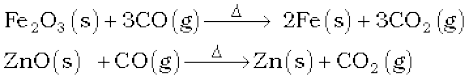
In CO molecule, there are one sigma and two π bonds between carbon and oxygen, :C ≡ O: . Because of the presence of a lone pair on carbon, CO molecule acts as a donor and reacts with certain metals when heated to form metal carbonyls. The highly poisonous nature of CO arises because of its ability to form a complex with haemoglobin, which is about 300 times more stable than the oxygen-haemoglobin complex. This prevents haemoglobin in the red blood corpuscles from carrying oxygen round the body and ultimately resulting in death.
11.8.2 Carbon Dioxide
It is prepared by complete combustion of carbon and carbon containing fuels in excess of air.

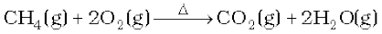
In the laboratory it is conveniently prepared by the action of dilute HCl on calcium carbonate.
CaCO3(s) + 2HCl (aq) → CaCl2 (aq) + CO2 (g) + H2O(l)
On commercial scale it is obtained by heating limestone.
It is a colourless and odourless gas. Its low solubility in water makes it of immense bio-chemical and geo-chemical importance. With water, it forms carbonic acid, H2CO3 which is a weak dibasic acid and dissociates in two steps:
H2CO3(aq) + H2O(l) HCO3–(aq) + H3O+(aq)
HCO3– (aq) + H2O(l) CO32– (aq) + H3O+(aq)
H2CO3/HCO3– buffer system helps to maintain pH of blood between 7.26 to 7.42. Being acidic in nature, it combines with alkalies to form metal carbonates.
Carbon dioxide, which is normally present to the extent of ~ 0.03 % by volume in the atmosphere, is removed from it by the process known as photosynthesis. It is the process by which green plants convert atmospheric CO2 into carbohydrates such as glucose. The overall chemical change can be expressed as:
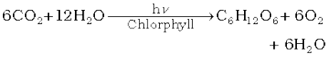
By this process plants make food for themselves as well as for animals and human beings. Unlike CO, it is not poisonous. But the increase in combustion of fossil fuels and decomposition of limestone for cement manufacture in recent years seem to increase the CO2 content of the atmosphere. This may lead to increase in green house effect and thus, raise the temperature of the atmosphere which might have serious consequences.
Carbon dioxide can be obtained as a solid in the form of dry ice by allowing the liquified CO2 to expand rapidly. Dry ice is used as a refrigerant for ice-cream and frozen food. Gaseous CO2 is extensively used to carbonate soft drinks. Being heavy and non-supporter of combustion it is used as fire extinguisher. A substantial amount of CO2 is used to manufacture urea.
In CO2 molecule carbon atom undergoes sp hybridisation. Two sp hybridised orbitals of carbon atom overlap with two p orbitals of oxygen atoms to make two sigma bonds while other two electrons of carbon atom are involved in pπ– pπ bonding with oxygen atom. This results in its linear shape [with both C–O bonds of equal length (115 pm)] with no dipole moment. The resonance structures are shown below:
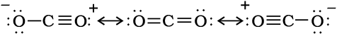
Resonance structures of carbon dioxide
11.8.3 Silicon Dioxide, SiO2
95% of the earth’s crust is made up of silica and silicates. Silicon dioxide, commonly known as silica, occurs in several crystallographic forms. Quartz, cristobalite and tridymite are some of the crystalline forms of silica, and they are interconvertable at suitable temperature. Silicon dioxide is a covalent, three-dimensional network solid in which each silicon atom is covalently bonded in a tetrahedral manner to four oxygen atoms. Each oxygen atom in turn covalently bonded to another silicon atoms as shown in diagram (Fig 11.6 ). Each corner is shared with another tetrahedron. The entire crystal may be considered as giant molecule in which eight membered rings are formed with alternate silicon and oxygen atoms.

Fig. 11.6 Three dimensional structure of SiO2
Silica in its normal form is almost non-reactive because of very high Si—O bond enthalpy. It resists the attack by halogens, dihydrogen and most of the acids and metals even at elevated temperatures. However, it is attacked by HF and NaOH.
SiO2 + 2NaOH → Na2SiO3 + H2O
SiO2 + 4HF → SiF4 + 2H2O
Quartz is extensively used as a piezoelectric material; it has made possible to develop extremely accurate clocks, modern radio and television broadcasting and mobile radio communications. Silica gel is used as a drying agent and as a support for chromatographic materials and catalysts. Kieselghur, an amorphous form of silica is used in filtration plants.
11.8.4 Silicones
They are a group of organosilicon polymers, which have (R2SiO) as a repeating unit. The starting materials for the manufacture of silicones are alkyl or aryl substituted silicon chlorides, RnSiCl(4–n), where R is alkyl or aryl group. When methyl chloride reacts with silicon in the presence of copper as a catalyst at a temperature 573K various types of methyl substituted chlorosilane of formula MeSiCl3, Me2SiCl2, Me3SiCl with small amount of Me4Si are formed. Hydrolysis of dimethyl-dichlorosilane, (CH3)2SiCl2 followed by condensation polymerisation yields straight chain polymers.
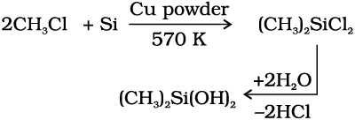
Silicones being surrounded by non-polar alkyl groups are water repelling in nature. They have in general high thermal stability, high dielectric strength and resistance to oxidation and chemicals. They have wide applications. They are used as sealant, greases, electrical insulators and for water proofing of fabrics. Being biocompatible they are also used in surgical and cosmetic plants.
Problem: 11.8
What are silicones ?
Solution
Simple silicones consist of 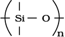 chains in which alkyl or phenyl groups occupy the remaining bonding positions on each silicon. They are hydrophobic (water repellant) in nature.
11.8.5 Silicates
A large number of silicates minerals exist in nature. Some of the examples are feldspar, zeolites, mica and asbestos. The basic structural unit of silicates is SiO44– (Fig.11.7) in which silicon atom is bonded to four oxygen atoms in tetrahedron fashion. In silicates either the discrete unit is present or a number of such units are joined together via corners by sharing 1,2,3 or 4 oxygen atoms per silicate units. When silicate units are linked together, they form chain, ring, sheet or three-dimensional structures. Negative charge on silicate structure is neutralised by positively charged metal ions. If all the four corners are shared with other tetrahedral units, three-dimensional network is formed.
(a) (b)
Fig. 11.7 (a) Tetrahedral structure of SiO44–anion; (b) Representation of SiO44–unit
Two important man-made silicates are glass and cement.
11.8.6 Zeolites
If aluminium atoms replace few silicon atoms in three-dimensional network of silicon dioxide, overall structure known as aluminosilicate, acquires a negative charge. Cations such as Na+, K+ or Ca2+ balance the negative charge. Examples are feldspar and zeolites. Zeolites are widely used as a catalyst in petrochemical industries for cracking of hydrocarbons and isomerisation, e.g., ZSM-5 (A type of zeolite) used to convert alcohols directly into gasoline. Hydrated zeolites are used as ion exchangers in softening of “hard” water.
SUMMARY
p-Block of the periodic table is unique in terms of having all types of elements – metals, non-metals and metalloids. There are six groups of p-block elements in the periodic table numbering from 13 to 18. Their valence shell electronic configuration is ns2np1–6 (except for He). Differences in the inner core of their electronic configuration greatly influence their physical and chemical properties. As a consequence of this, a lot of variation in properties among these elements is observed. In addition to the group oxidation state, these elements show other oxidation states differing from the total number of valence electrons by unit of two. While the group oxidation state is the most stable for the lighter elements of the group, lower oxidation states become progressively more stable for the heavier elements. The combined effect of size and availability of d orbitals considerably influences the ability of these elements to form π-bonds. While the lighter elements form pπ–pπ bonds, the heavier ones form dπ–pπ or dπ–dπ bonds. Absence of d orbital in second period elements limits their maximum covalence to 4 while heavier ones can exceed this limit.
Boron is a typical non-metal and the other members are metals. The availability of 3 valence electrons (2s22p1) for covalent bond formation using four orbitals (2s, 2px, 2py and 2pz) leads to the so called electron deficiency in boron compounds. This deficiency makes them good electron acceptor and thus boron compounds behave as Lewis acids. Boron forms covalent molecular compounds with dihydrogen as boranes, the simplest of which is diborane, B2H6. Diborane contains two bridging hydrogen atoms between two boron atoms; these bridge bonds are considered to be three-centre two-electron bonds. The important compounds of boron with dioxygen are boric acid and borax. Boric acid, B(OH)3 is a weak monobasic acid; it acts as a Lewis acid by accepting electrons from hydroxyl ion. Borax is a white crystalline solid of formula Na2[B4O5(OH)4]·8H2O. The borax bead test gives characteristic colours of transition metals.
Aluminium exhibits +3 oxidation state. With heavier elements +1 oxidation state gets progressively stabilised on going down the group. This is a consequence of the so called inert pair effect.
Carbon is a typical non-metal forming covalent bonds employing all its four valence electrons (2s22p2). It shows the property of catenation, the ability to form chains or rings, not only with C–C single bonds but also with multiple bonds (C=C or C≡C). The tendency to catenation decreases as C>>Si>Ge ~ Sn > Pb. Carbon provides one of the best examples of allotropy. Three important allotropes of carbon are diamond, graphite and fullerenes. The members of the carbon family mainly exhibit +4 and +2 oxidation states; compouds in +4 oxidation states are generally covalent in nature. The tendency to show +2 oxidation state increases among heavier elements. Lead in +2 state is stable whereas in +4 oxidation state it is a strong oxidising agent. Carbon also exhibits negative oxidation states. It forms two important oxides: CO and CO2. Carbon monoxide is neutral whereas CO2 is acidic in nature. Carbon monoxide having lone pair of electrons on C forms metal carbonyls. It is deadly poisonous due to higher stability of its haemoglobin complex as compared to that of oxyhaemoglobin complex. Carbon dioxide as such is not toxic. However, increased content of CO2 in atmosphere due to combustion of fossil fuels and decomposition of limestone is feared to cause increase in ‘green house effect’. This, in turn, raises the temperature of the atmosphere and causes serious complications. Silica, silicates and silicones are important class of compounds and find applications in industry and technology.
EXERCISES
11.1 Discuss the pattern of variation in the oxidation states of
(i) B to Tl and (ii) C to Pb.
11.2 How can you explain higher stability of BCl3 as compared to TlCl3 ?
11.3 Why does boron triflouride behave as a Lewis acid ?
11.4 Consider the compounds, BCl3 and CCl4. How will they behave with
water ? Justify.
11.5 Is boric acid a protic acid ? Explain.
11.6 Explain what happens when boric acid is heated .
11.7 Describe the shapes of BF3 and BH4–. Assign the hybridisation of boron in these species.
11.8 Write reactions to justify amphoteric nature of aluminium.
11.9 What are electron deficient compounds ? Are BCl3 and SiCl4 electron deficient species ? Explain.
11.10 Write the resonance structures of CO32–and HCO3– .
11.11 What is the state of hybridisation of carbon in (a) CO32– (b) diamond
(c) graphite?
11.12 Explain the difference in properties of diamond and graphite on the basis of their structures.
11.13 Rationalise the given statements and give chemical reactions :
11.14 Suggest reasons why the B–F bond lengths in BF3 (130 pm) and BF4– (143 pm) differ.
11.15 If B–Cl bond has a dipole moment, explain why BCl3 molecule has zero dipole moment.
11.16 Aluminium trifluoride is insoluble in anhydrous HF but dissolves on addition of NaF. Aluminium trifluoride precipitates out of the resulting solution when gaseous BF3 is bubbled through. Give reasons.
11.17 Suggest a reason as to why CO is poisonous.
11.18 How is excessive content of CO2 responsible for global warming ?
11.19 Explain structures of diborane and boric acid.
11.20 What happens when
(a) Borax is heated strongly,
(b) Boric acid is added to water,
(c) Aluminium is treated with dilute NaOH,
(d) BF3 is reacted with ammonia ?
11.21 Explain the following reactions
(a) Silicon is heated with methyl chloride at high temperature in the presence of copper;
(b) Silicon dioxide is treated with hydrogen fluoride;
(c) CO is heated with ZnO;
(d) Hydrated alumina is treated with aqueous NaOH solution.
11.22 Give reasons :
(i) Conc. HNO3 can be transported in aluminium container.
(ii) A mixture of dilute NaOH and aluminium pieces is used to open drain.
(iii) Graphite is used as lubricant.
(iv) Diamond is used as an abrasive.
(v) Aluminium alloys are used to make aircraft body.
(vi) Aluminium utensils should not be kept in water overnight.
(vii) Aluminium wire is used to make transmission cables.
11.23 Explain why is there a phenomenal decrease in ionization enthalpy from carbon to silicon ?
11.24 How would you explain the lower atomic radius of Ga as compared to Al ?
11.25 What are allotropes? Sketch the structure of two allotropes of carbon namely diamond and graphite. What is the impact of structure on physical properties of two allotropes?
11.26 (a) Classify following oxides as neutral, acidic, basic or amphoteric:
CO, B2O3, SiO2, CO2, Al2O3, PbO2, Tl2O3
(b) Write suitable chemical equations to show their nature.
11.27 In some of the reactions thallium resembles aluminium, whereas in others it resembles with group I metals. Support this statement by giving some evidences.
11.28 When metal X is treated with sodium hydroxide, a white precipitate (A) is obtained, which is soluble in excess of NaOH to give soluble complex (B). Compound (A) is soluble in dilute HCl to form compound (C). The compound (A) when heated strongly gives (D), which is used to extract metal. Identify (X), (A), (B), (C) and (D). Write suitable equations to support their identities.
11.29 What do you understand by (a) inert pair effect (b) allotropy and (c) catenation?
11.30 A certain salt X, gives the following results.
(i) Its aqueous solution is alkaline to litmus.
(ii) It swells up to a glassy material Y on strong heating.
(iii) When conc. H2SO4 is added to a hot solution of X,white crystal of an acid Z separates out.
Write equations for all the above reactions and identify X, Y and Z.
11.31 Write balanced equations for:
(i) BF3 + LiH →
(ii) B2H6 + H2O →
(iii) NaH + B2H6 →
(iv) H3BO3 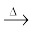
(v) Al + NaOH →
(vi) B2H6 + NH3 →
11.32. Give one method for industrial preparation and one for laboratory preparation of CO and CO2 each.
11.33 An aqueous solution of borax is
(a) neutral (b) amphoteric
(c) basic (d) acidic
11.34 Boric acid is polymeric due to
(a) its acidic nature (b) the presence of hydrogen bonds
(c) its monobasic nature (d) its geometry
11.35 The type of hybridisation of boron in diborane is
(a) sp (b) sp2 (c) sp3 (d) dsp2
11.36 Thermodynamically the most stable form of carbon is
(a) diamond (b) graphite
(c) fullerenes (d) coal
11.37 Elements of group 14
(a) exhibit oxidation state of +4 only
(b) exhibit oxidation state of +2 and +4
(c) form M2– and M4+ ions
(d) form M2+ and M4+ ions
11.38 If the starting material for the manufacture of silicones is RSiCl3, write the structure of the product formed.